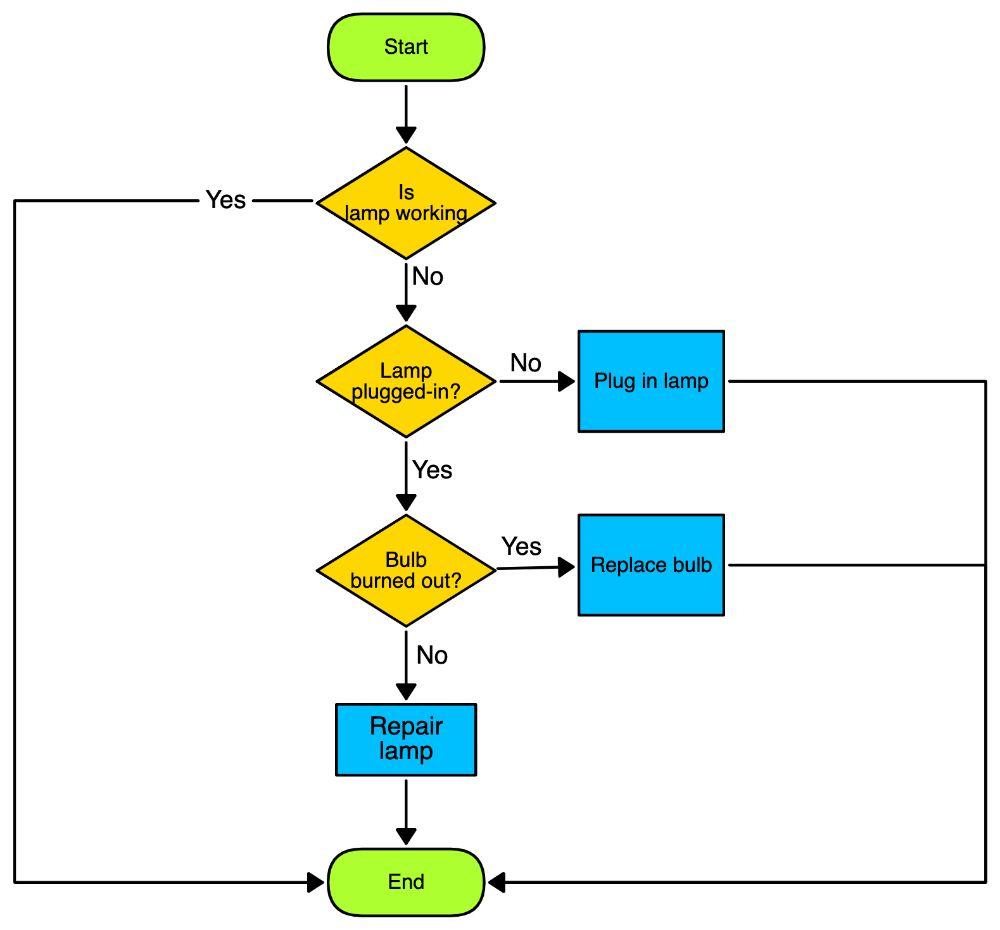
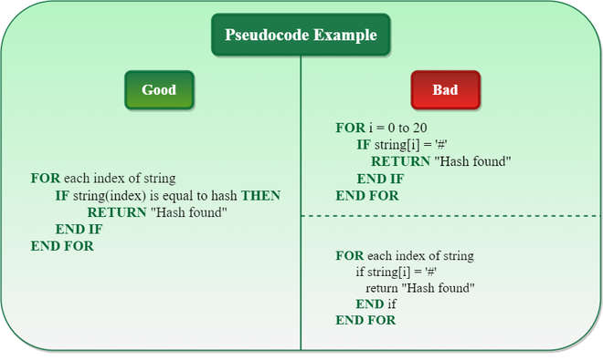

Academic Writing Concepts
Understand ethics, sampling methods, research design, etc.
Lesson Completion Tracker
Complete lessons to earn badges and unlock new activities. Reset clears answers and progress so you can try again.
Chapter 1: Introduction to Research
Lesson 1.1: What is Research?
An overview of the research process.

Mini Activity: Drag-and-Drop
Arrange the steps of the research process in order.
- Analyze Results
- Formulate Question
- Draw Conclusions
- Collect Data
- Review Literature
Key Takeaways
- Research is a systematic process.
- It involves asking questions and finding answers.
Lesson 1.2: Types of Research
Exploring different categories of research.
Mini Activity: Fill-in-the-Blank
Fill in the missing word:
research
uses numbers and statistics.
research
uses words and meanings.
Key Takeaways
- There are many types of research: qualitative, quantitative, etc.
- Each type serves a different purpose.
Chapter 2: Research Ethics
Lesson 2.1: Ethical Principles
Fundamental ethical considerations in research.

Mini Activity: Matching
Match each ethical principle to its definition:
Key Takeaways
- Ethics are essential in research.
- Respect, integrity, and responsibility are key values.
Lesson 2.2: Informed Consent
The importance of informed consent.

Mini Activity: Fill-in-the-Blank
Complete: Informed consent means participants to take part and the study details.
Key Takeaways
- Informed consent protects participants.
- It ensures transparency and respect.
Chapter 3: Sampling Methods
Lesson 3.1: Basic Sampling
Introduction to sampling concepts.

Mini Activity: Drag-and-Drop
Sort sampling types by their characteristics.
- Random
- Systematic
- Stratified
- Cluster
Lesson 3.2: Probability Sampling
Different types of probability sampling.

Mini Activity: Fill-in-the-Blank
Probability sampling uses selection and chance for all.
Chapter 4: Research Design
Lesson 4.1: Experimental Design
Designing experimental research studies.
Mini Activity: Drag-and-Drop
Arrange the steps of experimental design in order.
- Hypothesis
- Variables
- Experiment
- Analysis
Lesson 4.2: Survey Design
Creating effective surveys for research.
Mini Activity: Fill-in-the-Blank
Survey design should avoid questions and use wording.
Chapter 5: Data Analysis
Lesson 5.1: Descriptive Statistics
Understanding descriptive statistical methods.
.png)
Mini Activity: Matching
Match each term to its definition:
Lesson 5.2: Inferential Statistics
Introduction to inferential statistics.
Mini Activity: Fill-in-the-Blank
Inferential statistics help you make about populations and from samples.